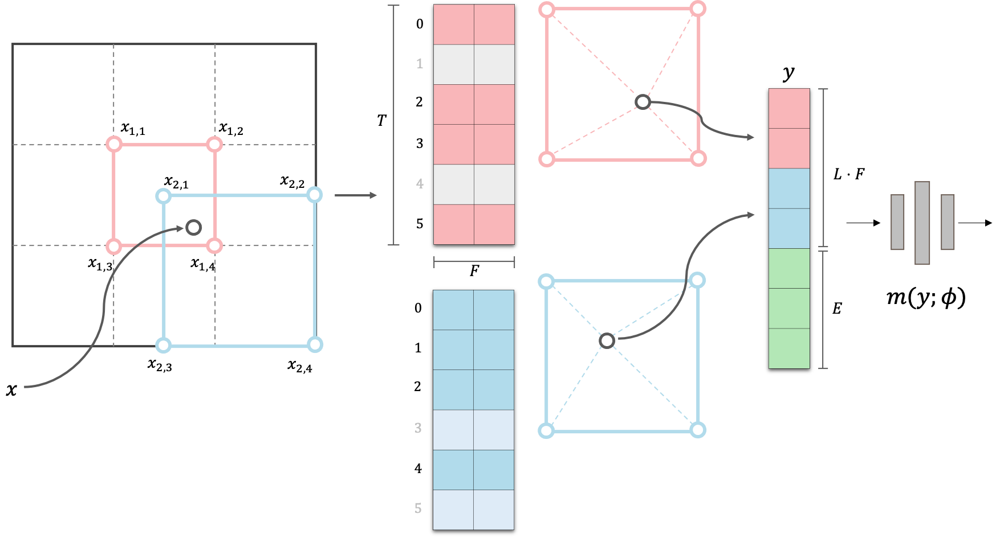
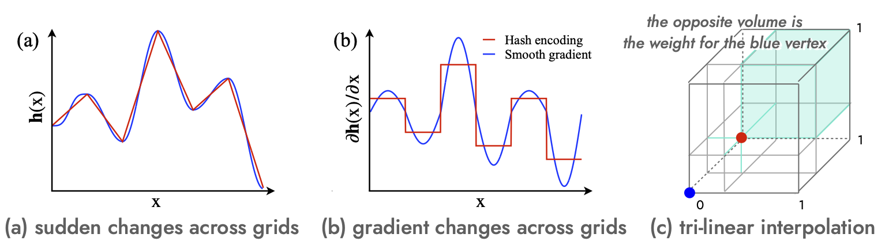
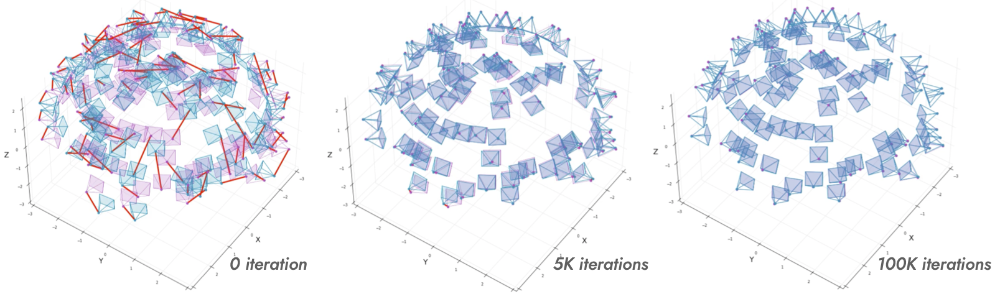
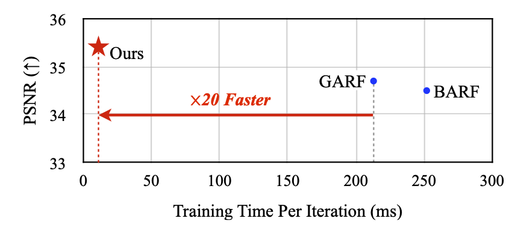
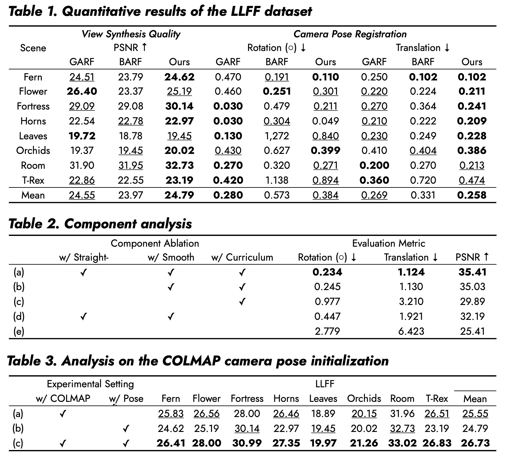

Method
Multi-Resolution Hash Encoding

- Positional encoding uses hash tables to store multi-resolution features.
- Each feature is the trilinear interpolation of the eight corner entries in a grid cell, weighted by the sample position.
- Gradients cannot pass through the random hash indices themselves. They pass through the interpolation weights, whose coordinate derivatives are discontinuous across grid cells.
Advantage: fast convergence with strong reconstruction accuracy.
Problem: back-propagation through ray-sampled positions becomes unstable when the camera poses also have to move.
Smooth Gradients for Stable Back-Propagation

Derivative of Multi-Resolution Hash Encoding
The Jacobian of the encoded feature at level $l$ is
$$ \begin{aligned} \nabla_{\mathbf{x}}\mathbf{h}_{l}(\mathbf{x}) &= \left[ \frac{\partial \mathbf{h}_{l}(\mathbf{x})}{\partial x_1}, \dots, \frac{\partial \mathbf{h}_{l}(\mathbf{x})}{\partial x_d} \right] \\ &= \sum_{i=1}^{2^{d}} \mathcal{H}_{l}\big(h_{l}(\mathbf{c}_{i,l}(\mathbf{x}))\big) \left[ \frac{\partial w_{i,l}(\mathbf{x})}{\partial x_1}, \dots, \frac{\partial w_{i,l}(\mathbf{x})}{\partial x_d} \right]. \end{aligned} $$
Let $\bar{i}$ be the corner paired with $\mathbf{c}_{i,l}$ along the $k$-th axis of the unit hypercube. Among the $2^d$ corners, there are $2^{d-1}$ such pairs, and their interpolation-weight derivatives have opposite signs:
$$ \frac{\partial w_{\bar{i}_k,l}(\mathbf{x})}{\partial x_k} = -\frac{\partial w_{i,l}(\mathbf{x})}{\partial x_k}. $$
Using those pairs, the $k$-th Jacobian component can be rewritten as
$$ \begin{aligned} \frac{\partial \mathbf{h}_{l}(\mathbf{x})}{\partial x_k} &= \sum_{i=1}^{2^{d}} \mathcal{H}_{l}\big(h_{l}(\mathbf{c}_{i,l}(\mathbf{x}))\big) \frac{\partial w_{i,l}(\mathbf{x})}{\partial x_k} \\ &= \sum_{i=1}^{2^{d-1}} \left[ \mathcal{H}_{l}\big(h_{l}(\mathbf{c}_{i,l}(\mathbf{x}))\big) - \mathcal{H}_{l}\big(h_{l}(\mathbf{c}_{\bar{i}_k,l}(\mathbf{x}))\big) \right] \prod_{j \neq k} \left(1-\left|\mathbf{x}_{l}-\mathbf{c}_{i,l}(\mathbf{x})\right|_j\right). \end{aligned} $$
The interpolation terms form a partition of unity:
$$ \sum_{i=1}^{2^{d-1}} \prod_{j \neq k} \left(1-\left|\mathbf{x}_{l}-\mathbf{c}_{i,l}(\mathbf{x})\right|_j\right) =1. $$
Therefore, $\partial\mathbf{h}_{l}(\mathbf{x})/\partial x_k$ is a convex combination of paired hash-entry differences. Within a cell it is effectively piecewise constant along the $k$-th axis, then changes abruptly at the next boundary. Those changes create the oscillating pose gradients.
We replace the linear interpolation gradient with an infinitely differentiable cosine weighting:
$$ \delta(w_{i,l}) = \frac{1-\cos(\pi w_{i,l})}{2}, \qquad \nabla_x\delta(w_{i,l}) = \frac{\pi}{2}\sin(\pi w_{i,l})\nabla_x w_{i,l}. $$
Straight-Through Forward Function
Using nonlinear interpolation in the forward pass can hinder the original performance of Instant-NGP. We therefore retain trilinear interpolation for the forward value and use the smooth function only for its gradient:
$$ \hat{w}_{i,l} = w_{i,l} +\lambda\delta(w_{i,l}) -\lambda\tilde{\delta}(w_{i,l}), $$
where $\tilde{\delta}(w_{i,l})$ denotes a value detached from the computational graph. The two smooth terms cancel numerically in the forward pass, while the desired smooth derivative remains during back-propagation.
Experiments
Camera-Pose Refinement Progress
Red lines denote pose-error vectors between the ground-truth cameras and the optimized poses.

Training Time per Iteration

- Runs each training iteration roughly 20× faster than the BARF and GARF pose-refinement baselines.
- Retains Instant-NGP's fast convergence instead of trading registration stability for a slower positional encoding.
- Retains the reconstruction accuracy of multi-resolution hash encoding.
- Improves the stability of joint camera-pose refinement.
Quantitative Results

Across synthetic and real novel-view-synthesis datasets, the method improved camera registration while retaining rapid neural-rendering convergence. The work was published at ICML 2023, where the paper reported state-of-the-art pose-refinement performance.